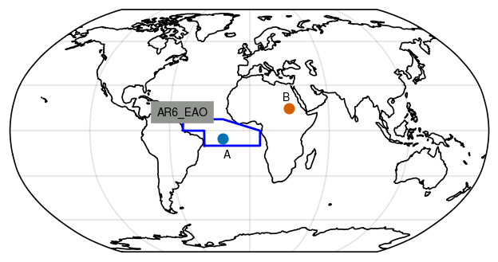
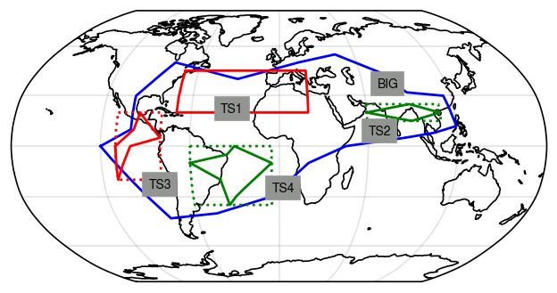

Is it in a GeoRegion?
When dealing with geographic data, we often wish to check if a point or region is inside another region. GeoRegions.jl allows you to perform this check easily with the function isinGeoRegion.
We use the Point2 Type from the package GeometryBasics.jl, which is reexported by GeoRegions.jl, as an easy way to denote points. This also allows us to use the package PolygonOps.jl to determine if a point is inside a region.
Is a Point in a GeoRegion?
Let us test if a point is in a given GeoRegion. For example, take the below points in the globe:
- Point A at coordinates (-20,-5)
- Point B at coordinates (30,15)

Let us test if they are in the region AR6_EAO, defined in the blue bounding box above.
julia> using GeoRegionsjulia> isinGeoRegion(Point2(-20,5),GeoRegion("AR6_EAO"),throw=false) # Point A[ Info: 2022-07-30T05:15:38.760 - GeoRegions.jl - Retrieving information for the GeoRegion defined by the ID AR6_EAO truejulia> isinGeoRegion(Point2(340,5),GeoRegion("AR6_EAO"),throw=false) # Point A[ Info: 2022-07-30T05:15:38.935 - GeoRegions.jl - Retrieving information for the GeoRegion defined by the ID AR6_EAO truejulia> isinGeoRegion(Point2(30,15),GeoRegion("AR6_EAO"),throw=false) # Point B[ Info: 2022-07-30T05:15:38.937 - GeoRegions.jl - Retrieving information for the GeoRegion defined by the ID AR6_EAO false
GeoRegions.isinGeoRegion — MethodisinGeoRegion(
Point :: Point2{<:Real},
geo :: GeoRegion;
tlon :: Real = 0,
tlat :: Real = 0,
throw :: Bool = true
) -> BoolCheck if a geographical point Point is within a GeoRegion defined by geo.
Arguments
Point: A geographical point of TypePoint2. PassPoint2(plon,plat), whereplonandplatare the longitude and latitudes of the point.geo: The GeoRegion struct container
Keyword Arguments
tlon: Threshold for the longitude boundtlat: Threshold for the latitude boundthrow: Iftrue, then ifPointis not withingeo, an error is thrown and the program stops running.
Is a GeoRegion inside a GeoRegion?
Since any arbitrary geographic region can be defined as a GeoRegion, the natural extension now is to determine if a GeoRegion is wholly within another GeoRegion.
Let us consider an arbitrary GeoRegion BIG, and other smaller GeoRegions TS1-4 as defined below
julia> using GeoRegionsjulia> PolyRegion( "BIG","GLB","A Big Region", [-120,-100,-100,-80,-30,15,45,75,90,115,120,105,85,45,20,-5,-45,-80,-120], [0,10,30,50,40,50,55,44,32,30,12,8,5,0,-10,-30,-40,-43,0] );[ Info: 2022-07-30T05:15:38.949 - GeoRegions.jl - Checking to see if the ID BIG is in use ┌ Warning: 2022-07-30T05:15:38.949 - GeoRegions.jl - BIG is not a valid GeoRegion identifier, use either RectRegion() or PolyRegion() to add this GeoRegion to the list. └ @ GeoRegions ~/work/GeoRegions.jl/GeoRegions.jl/src/Read.jl:489 [ Info: 2022-07-30T05:15:38.949 - GeoRegions.jl - Adding the GeoRegion BIG to the list. [ Info: 2022-07-30T05:15:38.951 - GeoRegions.jl - Checking to see if the ID GLB is in use [ Info: 2022-07-30T05:15:38.951 - GeoRegions.jl - The ID GLB is already in use [ Info: 2022-07-30T05:15:38.951 - GeoRegions.jl - Retrieving information for the GeoRegion defined by the ID GLB [ Info: 2022-07-30T05:15:38.953 - GeoRegions.jl - Performing a check to determine if the A Big Region GeoRegion (BIG) is inside the Globe GeoRegion (GLB) [ Info: 2022-07-30T05:15:38.953 - GeoRegions.jl - The GeoRegion BIG (A Big Region) is indeed a subset of the GeoRegion GLB (Globe)julia> RectRegion("TS1","GLB","Test Region 1",[45,20,20,-70]);[ Info: 2022-07-30T05:15:38.988 - GeoRegions.jl - Checking to see if the ID TS1 is in use ┌ Warning: 2022-07-30T05:15:38.989 - GeoRegions.jl - TS1 is not a valid GeoRegion identifier, use either RectRegion() or PolyRegion() to add this GeoRegion to the list. └ @ GeoRegions ~/work/GeoRegions.jl/GeoRegions.jl/src/Read.jl:489 [ Info: 2022-07-30T05:15:38.989 - GeoRegions.jl - Adding the GeoRegion TS1 to the list. [ Info: 2022-07-30T05:15:38.990 - GeoRegions.jl - Checking to see if the ID GLB is in use [ Info: 2022-07-30T05:15:38.990 - GeoRegions.jl - The ID GLB is already in use [ Info: 2022-07-30T05:15:38.990 - GeoRegions.jl - Retrieving information for the GeoRegion defined by the ID GLB [ Info: 2022-07-30T05:15:38.992 - GeoRegions.jl - Performing a check to determine if the Test Region 1 GeoRegion (TS1) is inside the Globe GeoRegion (GLB) [ Info: 2022-07-30T05:15:38.992 - GeoRegions.jl - The GeoRegion TS1 (Test Region 1) is indeed a subset of the GeoRegion GLB (Globe)julia> PolyRegion("TS2","GLB","Test Region 2",[60,90,110,90,60],[20,25,20,15,20]);[ Info: 2022-07-30T05:15:38.995 - GeoRegions.jl - Checking to see if the ID TS2 is in use ┌ Warning: 2022-07-30T05:15:38.995 - GeoRegions.jl - TS2 is not a valid GeoRegion identifier, use either RectRegion() or PolyRegion() to add this GeoRegion to the list. └ @ GeoRegions ~/work/GeoRegions.jl/GeoRegions.jl/src/Read.jl:489 [ Info: 2022-07-30T05:15:38.995 - GeoRegions.jl - Adding the GeoRegion TS2 to the list. [ Info: 2022-07-30T05:15:38.997 - GeoRegions.jl - Checking to see if the ID GLB is in use [ Info: 2022-07-30T05:15:38.997 - GeoRegions.jl - The ID GLB is already in use [ Info: 2022-07-30T05:15:38.997 - GeoRegions.jl - Retrieving information for the GeoRegion defined by the ID GLB [ Info: 2022-07-30T05:15:38.999 - GeoRegions.jl - Performing a check to determine if the Test Region 2 GeoRegion (TS2) is inside the Globe GeoRegion (GLB) [ Info: 2022-07-30T05:15:38.999 - GeoRegions.jl - The GeoRegion TS2 (Test Region 2) is indeed a subset of the GeoRegion GLB (Globe)julia> PolyRegion( "TS3","GLB","Test Region 3", [-110,-98,-95,-90,-80,-100,-110,-110], [0,10,20,15,5,0,-20,0] );[ Info: 2022-07-30T05:15:39.002 - GeoRegions.jl - Checking to see if the ID TS3 is in use ┌ Warning: 2022-07-30T05:15:39.002 - GeoRegions.jl - TS3 is not a valid GeoRegion identifier, use either RectRegion() or PolyRegion() to add this GeoRegion to the list. └ @ GeoRegions ~/work/GeoRegions.jl/GeoRegions.jl/src/Read.jl:489 [ Info: 2022-07-30T05:15:39.002 - GeoRegions.jl - Adding the GeoRegion TS3 to the list. [ Info: 2022-07-30T05:15:39.003 - GeoRegions.jl - Checking to see if the ID GLB is in use [ Info: 2022-07-30T05:15:39.003 - GeoRegions.jl - The ID GLB is already in use [ Info: 2022-07-30T05:15:39.004 - GeoRegions.jl - Retrieving information for the GeoRegion defined by the ID GLB [ Info: 2022-07-30T05:15:39.006 - GeoRegions.jl - Performing a check to determine if the Test Region 3 GeoRegion (TS3) is inside the Globe GeoRegion (GLB) [ Info: 2022-07-30T05:15:39.006 - GeoRegions.jl - The GeoRegion TS3 (Test Region 3) is indeed a subset of the GeoRegion GLB (Globe)julia> PolyRegion( "TS4","GLB","Test Region 4", [300,325,330,355,330,325,320,300], [-10,-5,0,-10,-30,-35,-20,-10] );[ Info: 2022-07-30T05:15:39.008 - GeoRegions.jl - Checking to see if the ID TS4 is in use ┌ Warning: 2022-07-30T05:15:39.008 - GeoRegions.jl - TS4 is not a valid GeoRegion identifier, use either RectRegion() or PolyRegion() to add this GeoRegion to the list. └ @ GeoRegions ~/work/GeoRegions.jl/GeoRegions.jl/src/Read.jl:489 [ Info: 2022-07-30T05:15:39.008 - GeoRegions.jl - Adding the GeoRegion TS4 to the list. [ Info: 2022-07-30T05:15:39.010 - GeoRegions.jl - Checking to see if the ID GLB is in use [ Info: 2022-07-30T05:15:39.010 - GeoRegions.jl - The ID GLB is already in use [ Info: 2022-07-30T05:15:39.010 - GeoRegions.jl - Retrieving information for the GeoRegion defined by the ID GLB [ Info: 2022-07-30T05:15:39.013 - GeoRegions.jl - Performing a check to determine if the Test Region 4 GeoRegion (TS4) is inside the Globe GeoRegion (GLB) [ Info: 2022-07-30T05:15:39.013 - GeoRegions.jl - The GeoRegion TS4 (Test Region 4) is indeed a subset of the GeoRegion GLB (Globe)
And we plot the bounds (dotted) and the shape (solid) of the GeoRegions below:

We see by eye that GeoRegion TS2 and TS4 are in the BIG region, but the other GeoRegions are not. Now let us verify this with isinGeoRegion
julia> using GeoRegionsjulia> geo = GeoRegion("BIG");[ Info: 2022-07-30T05:15:39.018 - GeoRegions.jl - Retrieving information for the GeoRegion defined by the ID BIGjulia> t1 = GeoRegion("TS1"); isinGeoRegion(t1,geo,throw=false)[ Info: 2022-07-30T05:15:39.020 - GeoRegions.jl - Retrieving information for the GeoRegion defined by the ID TS1 [ Info: 2022-07-30T05:15:39.324 - GeoRegions.jl - Performing a check to determine if the Test Region 1 GeoRegion (TS1) is inside the A Big Region GeoRegion (BIG) ┌ Warning: 2022-07-30T05:15:50.278 - GeoRegions.jl - The GeoRegion TS1 (Test Region 1) is not a subset of the GeoRegion BIG (A Big Region) └ @ GeoRegions ~/work/GeoRegions.jl/GeoRegions.jl/src/IsInGeoRegion.jl:236 falsejulia> t2 = GeoRegion("TS2"); isinGeoRegion(t2,geo,throw=false)[ Info: 2022-07-30T05:15:50.295 - GeoRegions.jl - Retrieving information for the GeoRegion defined by the ID TS2 [ Info: 2022-07-30T05:15:50.432 - GeoRegions.jl - Performing a check to determine if the Test Region 2 GeoRegion (TS2) is inside the A Big Region GeoRegion (BIG) [ Info: 2022-07-30T05:15:59.594 - GeoRegions.jl - The GeoRegion TS2 (Test Region 2) is indeed a subset of the GeoRegion BIG (A Big Region) truejulia> t3 = GeoRegion("TS3"); isinGeoRegion(t3,geo,throw=false)[ Info: 2022-07-30T05:15:59.595 - GeoRegions.jl - Retrieving information for the GeoRegion defined by the ID TS3 [ Info: 2022-07-30T05:15:59.597 - GeoRegions.jl - Performing a check to determine if the Test Region 3 GeoRegion (TS3) is inside the A Big Region GeoRegion (BIG) ┌ Warning: 2022-07-30T05:16:07.686 - GeoRegions.jl - The GeoRegion TS3 (Test Region 3) is not a subset of the GeoRegion BIG (A Big Region) └ @ GeoRegions ~/work/GeoRegions.jl/GeoRegions.jl/src/IsInGeoRegion.jl:236 falsejulia> t4 = GeoRegion("TS4"); isinGeoRegion(t4,geo,throw=false)[ Info: 2022-07-30T05:16:07.687 - GeoRegions.jl - Retrieving information for the GeoRegion defined by the ID TS4 [ Info: 2022-07-30T05:16:07.689 - GeoRegions.jl - Performing a check to determine if the Test Region 4 GeoRegion (TS4) is inside the A Big Region GeoRegion (BIG) [ Info: 2022-07-30T05:16:16.733 - GeoRegions.jl - The GeoRegion TS4 (Test Region 4) is indeed a subset of the GeoRegion BIG (A Big Region) true
And we see that this is indeed the case.
GeoRegions.isinGeoRegion — MethodisinGeoRegion(
Child :: GeoRegion,
rectG :: RectRegion;
throw :: Bool = true
) -> BoolCheck if a child GeoRegion defined by Child is within a RectRegion rectG.
Arguments
Child: A GeoRegion that we postulate to be a "child", or a subset of the GeoRegion defined bypolyGpolyG: A GeoRegion that we postulate to be a "parent", or containing the GeoRegion defined byChild
Keyword Arguments
throw: Iftrue, then ifChildis not withinpolyG, an error is thrown and the program stops running
GeoRegions.isinGeoRegion — MethodisinGeoRegion(
Child :: GeoRegion,
polyG :: PolyRegion;
domask :: Bool = false,
throw :: Bool = true
) -> BoolCheck if a child GeoRegion defined by Child is within a PolyRegion polyG.
Arguments
Child: A GeoRegion that we postulate to be a "child", or a subset of the GeoRegion defined bypolyGpolyG: A GeoRegion that we postulate to be a "parent", or containing the GeoRegion defined byChild
Keyword Arguments
throw: Iftrue, then ifChildis not withinpolyG, an error is thrown and the program stops runningdomask: Ifthrowisfalseanddomaskistrue, return a mask (with bounds defined by theChildGeoRegion) showing the region whereChildandpolyGdo not overlap